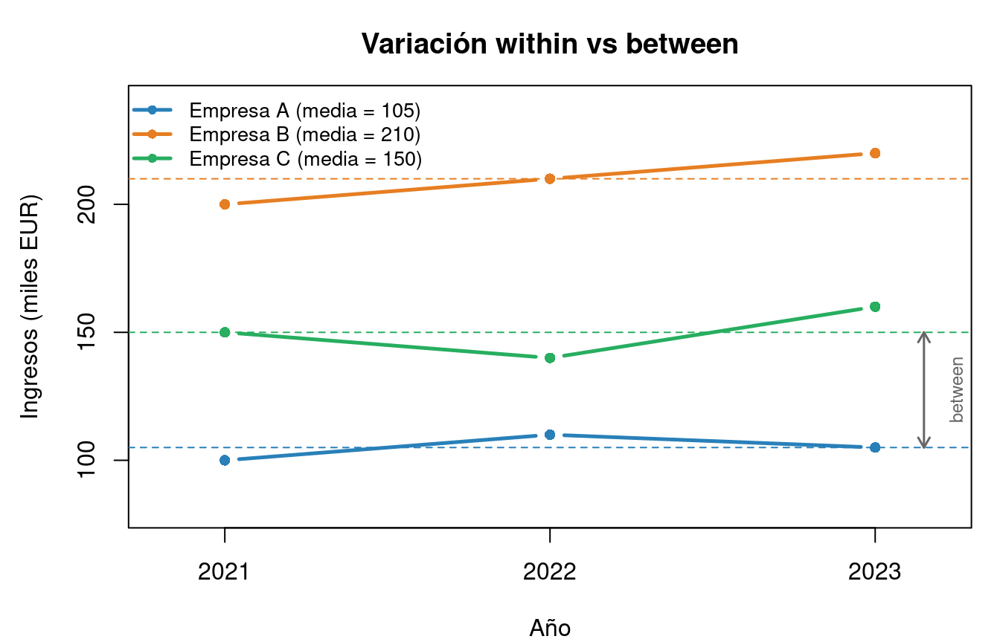
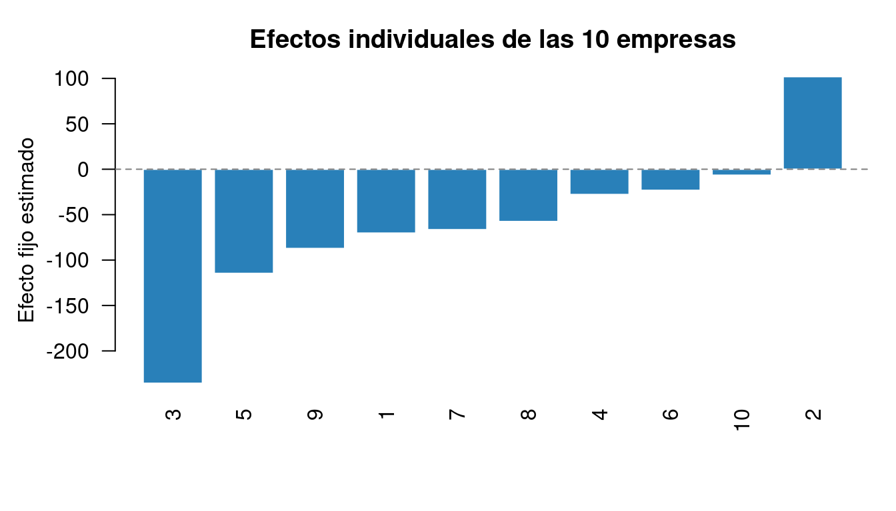

| Empresa | Año | Ingresos (\(x_{it}\)) | Media (\(\bar{x}_i\)) | Within (\(x_{it} - \bar{x}_i\)) |
|---|---|---|---|---|
| A | 2021 | 100 | 105 | -5 |
| A | 2022 | 110 | 105 | 5 |
| A | 2023 | 105 | 105 | 0 |
| B | 2021 | 200 | 210 | -10 |
| B | 2022 | 210 | 210 | 0 |
| B | 2023 | 220 | 210 | 10 |
| C | 2021 | 150 | 150 | 0 |
| C | 2022 | 140 | 150 | -10 |
| C | 2023 | 160 | 150 | 10 |
6 Datos de Panel
6.1 Introducción: ¿por qué datos de panel?
En los temas anteriores hemos trabajado con datos de corte transversal: una única observación por individuo en un momento determinado del tiempo. Este capítulo da un paso fundamental al incorporar la dimensión temporal: los datos de panel (también llamados datos longitudinales) contienen observaciones de los mismos \(n\) individuos (personas, empresas, países) a lo largo de \(T\) períodos de tiempo.
Esta estructura aporta ventajas decisivas frente al corte transversal. La más importante es la capacidad de controlar la heterogeneidad no observada. En muchas aplicaciones económicas, existen características individuales que afectan al comportamiento pero que no podemos medir directamente: la habilidad innata de un trabajador, la cultura organizativa de una empresa, la calidad institucional de un país. Si estas características están correlacionadas con las variables explicativas, la estimación por MCO en corte transversal produce resultados sesgados e inconsistentes. Los datos de panel permiten resolver este problema explotando la variación temporal de cada individuo.
Además, al combinar la variación entre individuos (variación between) con la variación dentro de cada individuo a lo largo del tiempo (variación within), los datos de panel proporcionan más información, mayor variabilidad y, en consecuencia, estimadores más precisos. También permiten estudiar efectos dinámicos: cómo cambian las variables de un individuo a lo largo del tiempo.
El modelo econométrico que desarrollaremos en este capítulo es:
\[y_{it} = \alpha_i + \mathbf{x}_{it}'\boldsymbol{\beta} + \varepsilon_{it}\]
donde \(\alpha_i\) es un efecto individual que captura la heterogeneidad no observada. La pregunta central del tema es cómo tratar \(\alpha_i\): si como un parámetro fijo a estimar (efectos fijos) o como una variable aleatoria (efectos aleatorios). Esta elección determina el estimador apropiado y condiciona toda la inferencia posterior.
6.2 Conceptos básicos
6.2.1 Estructura de los datos
Un conjunto de datos de panel tiene dos índices. El primero, \(i = 1, \ldots, n\), identifica al individuo (persona, empresa, país, región). El segundo, \(t = 1, \ldots, T_i\), identifica el período de tiempo (año, trimestre, mes). Cada observación se denota \((y_{it}, \mathbf{x}_{it})\) y contiene tanto la variable dependiente como las variables explicativas del individuo \(i\) en el período \(t\). El número total de observaciones es \(N = \sum_{i=1}^n T_i\).
6.2.2 Panel corto y panel largo
En función de la relación entre \(n\) y \(T\), los paneles se clasifican en dos categorías. Un panel corto (o micropanel) tiene muchos individuos observados durante pocos períodos (\(n\) grande, \(T\) pequeño). Es la estructura habitual en microeconometría: por ejemplo, 5.000 trabajadores observados durante 5 años. Un panel largo (o macropanel) presenta la situación inversa: pocos individuos con muchos períodos (\(n\) pequeño, \(T\) grande). Es típico de la macroeconometría: por ejemplo, 30 países observados durante 50 años.
En este curso nos centramos en paneles cortos, donde las propiedades asintóticas de los estimadores se derivan haciendo \(n \to \infty\) con \(T\) fijo.
6.2.3 Panel balanceado y no balanceado
Un panel es balanceado cuando todos los individuos se observan exactamente en los mismos \(T\) períodos, de modo que el número total de observaciones es \(n \times T\). Un panel es no balanceado cuando algunos individuos tienen más observaciones que otros, habitualmente porque abandonan la muestra antes del final del estudio (fenómeno conocido como atrición). Los estimadores de panel se adaptan sin dificultad a paneles no balanceados, pero la atrición puede introducir sesgo de selección si la salida de la muestra está relacionada con la variable dependiente.
6.2.4 Descomposición de la variación: within, between y overall
Esta descomposición es fundamental para comprender qué información explotan los distintos estimadores y constituye una de las ideas más importantes del análisis de datos de panel.
Para cualquier variable \(x_{it}\), podemos escribir:
\[x_{it} = \underbrace{\bar{x}_i}_{\text{componente between}} + \underbrace{(x_{it} - \bar{x}_i)}_{\text{componente within}}\]
donde \(\bar{x}_i = \frac{1}{T} \sum_{t=1}^T x_{it}\) es la media temporal del individuo \(i\).
La variación between mide las diferencias entre las medias de los distintos individuos: ¿ganan más las empresas grandes que las pequeñas? La variación within mide los cambios a lo largo del tiempo dentro de cada individuo: ¿ha aumentado la facturación de esta empresa concreta respecto a su propia media? La variación overall es la variación total, que combina ambas fuentes.
En este ejemplo, la variación between se aprecia en las diferencias entre medias (105, 210, 150): las empresas tienen niveles de ingresos muy distintos. La variación within se aprecia en la columna derecha: la empresa A oscila \(\{-5, +5, 0\}\) alrededor de su media de 105, mientras que la empresa C oscila \(\{-10, +10, 0\}\) con mayor amplitud.
Code
par(mar = c(4, 4.5, 3, 1))
plot(NA, xlim = c(0.8, 3.2), ylim = c(80, 240),
xlab = "Año", ylab = "Ingresos (miles EUR)",
main = "Variación within vs between", xaxt = "n")
axis(1, at = 1:3, labels = 2021:2023)
cols <- c("#2980B9", "#E67E22", "#27AE60")
medias <- c(105, 210, 150)
ingresos <- list(c(100, 110, 105), c(200, 210, 220), c(150, 140, 160))
for (i in 1:3) {
lines(1:3, ingresos[[i]], type = "b", pch = 16, col = cols[i], lwd = 2.5)
abline(h = medias[i], col = cols[i], lty = 2, lwd = 1)
}
legend("topleft", c("Empresa A (media = 105)", "Empresa B (media = 210)",
"Empresa C (media = 150)"),
col = cols, lwd = 2.5, pch = 16, cex = 0.85, bty = "n")
## Anotación between
arrows(3.15, medias[1], 3.15, medias[3], code = 3, col = "grey40", lwd = 1.5, length = 0.08)
text(3.25, mean(c(medias[1], medias[3])), "between", cex = 0.75, col = "grey40", srt = 90)
Esta descomposición tiene implicaciones directas para la estimación. El estimador de efectos fijos (within) utiliza exclusivamente la variación within, eliminando las diferencias entre individuos. El estimador between utiliza solo las medias individuales. El estimador de efectos aleatorios combina ambas fuentes de forma óptima bajo ciertos supuestos.
6.3 El modelo general de datos de panel
6.3.1 Especificación
El modelo lineal de datos de panel se formula como:
\[y_{it} = \alpha_i + \mathbf{x}_{it}'\boldsymbol{\beta} + \varepsilon_{it}, \qquad i = 1, \ldots, n; \quad t = 1, \ldots, T\]
donde:
- \(y_{it}\) es la variable dependiente del individuo \(i\) en el período \(t\).
- \(\mathbf{x}_{it}\) es un vector \(k \times 1\) de variables explicativas que varían tanto entre individuos como a lo largo del tiempo.
- \(\boldsymbol{\beta}\) es el vector de coeficientes de interés, común a todos los individuos y períodos.
- \(\alpha_i\) es el efecto individual no observado, constante en el tiempo para cada individuo.
- \(\varepsilon_{it}\) es la perturbación idiosincrática, con \(E[\varepsilon_{it}] = 0\) y \(\text{Var}(\varepsilon_{it}) = \sigma_\varepsilon^2\).
El efecto individual \(\alpha_i\) captura todas las características del individuo \(i\) que son constantes en el tiempo y que no están incluidas en \(\mathbf{x}_{it}\): la habilidad innata de un trabajador, la localización geográfica de una empresa, la cultura institucional de un país. Es la pieza central del análisis de panel.
6.3.2 ¿Efectos fijos o efectos aleatorios?
La distinción fundamental del análisis de panel reside en cómo se trata el efecto individual \(\alpha_i\). Existen dos enfoques.
En el enfoque de efectos fijos (EF), se trata \(\alpha_i\) como un parámetro desconocido a estimar (o, de forma equivalente, a eliminar mediante transformación). No se hace ningún supuesto sobre la relación entre \(\alpha_i\) y las variables explicativas \(\mathbf{x}_{it}\): se permite que estén correlacionados. Esta es la opción conservadora y robusta.
En el enfoque de efectos aleatorios (EA), se trata \(\alpha_i\) como una variable aleatoria extraída de una distribución con media cero y varianza \(\sigma_\alpha^2\). El supuesto clave es que \(\alpha_i\) no está correlacionado con las variables explicativas: \(E[\alpha_i | \mathbf{x}_{i1}, \ldots, \mathbf{x}_{iT}] = 0\). Esta condición es fuerte y, si se viola, el estimador de efectos aleatorios es inconsistente.
La elección entre ambos enfoques se resuelve empíricamente con el test de Hausman, que se desarrolla más adelante.
6.4 Estimador Pooled OLS
6.4.1 Concepto
El estimador Pooled OLS (MCO agrupado) es el enfoque más sencillo: ignora la estructura de panel y trata todas las \(nT\) observaciones como si fueran un único corte transversal. El modelo que estima es:
\[y_{it} = \alpha + \mathbf{x}_{it}'\boldsymbol{\beta} + u_{it}\]
donde \(u_{it} = \alpha_i + \varepsilon_{it}\) es un error compuesto que incluye tanto el efecto individual como la perturbación idiosincrática.
6.4.2 Cuándo es válido
Pooled OLS produce estimaciones consistentes de \(\boldsymbol{\beta}\) en dos situaciones. La primera es que no exista heterogeneidad individual (\(\alpha_i = \alpha\) para todo \(i\)), de modo que los individuos son homogéneos y el panel se comporta como un corte transversal grande. La segunda es que el efecto individual exista pero sea estrictamente independiente de las variables explicativas (\(\text{Cov}(\alpha_i, \mathbf{x}_{it}) = 0\)), que es el supuesto de efectos aleatorios.
6.4.3 El problema fundamental
Si el efecto individual \(\alpha_i\) está correlacionado con alguna de las variables explicativas — lo cual es frecuente en la práctica —, Pooled OLS es inconsistente. El error compuesto \(u_{it} = \alpha_i + \varepsilon_{it}\) queda correlacionado con \(\mathbf{x}_{it}\), violando la exogeneidad estricta de MCO. La consecuencia es un sesgo por variable omitida: \(\alpha_i\) actúa como una variable relevante no incluida en el modelo.
Además, incluso cuando Pooled OLS es consistente, los errores estándar clásicos son incorrectos porque el error compuesto \(u_{it}\) presenta autocorrelación dentro de cada individuo (el componente \(\alpha_i\) es común a todos los períodos de un mismo individuo). Por esta razón, siempre que se reporte un modelo Pooled OLS en datos de panel, deben utilizarse errores estándar agrupados (clustered) por individuo.
6.5 Modelo de efectos fijos (estimador within)
6.5.1 Intuición
La idea del estimador de efectos fijos es elegante en su sencillez: si el efecto individual \(\alpha_i\) contamina la estimación porque es constante en el tiempo y está correlacionado con los regresores, la solución es eliminarlo. Para ello se aplica la transformación within, que consiste en restar a cada observación la media temporal del individuo:
\[y_{it} - \bar{y}_i = (\mathbf{x}_{it} - \bar{\mathbf{x}}_i)'\boldsymbol{\beta} + (\varepsilon_{it} - \bar{\varepsilon}_i)\]
Al restar las medias, el efecto individual \(\alpha_i\) desaparece de la ecuación (porque \(\alpha_i - \alpha_i = 0\)). Las variables transformadas se denotan con tilde: \(\tilde{y}_{it} = y_{it} - \bar{y}_i\), \(\tilde{\mathbf{x}}_{it} = \mathbf{x}_{it} - \bar{\mathbf{x}}_i\). El modelo transformado es:
\[\tilde{y}_{it} = \tilde{\mathbf{x}}_{it}'\boldsymbol{\beta} + \tilde{\varepsilon}_{it}\]
El estimador de efectos fijos es simplemente MCO aplicado a estos datos transformados:
\[\hat{\boldsymbol{\beta}}_{EF} = \left(\sum_{i=1}^{n}\sum_{t=1}^{T} \tilde{\mathbf{x}}_{it}\tilde{\mathbf{x}}_{it}'\right)^{-1} \left(\sum_{i=1}^{n}\sum_{t=1}^{T} \tilde{\mathbf{x}}_{it}\tilde{y}_{it}\right)\]
6.5.2 Ejemplo numérico paso a paso
Para comprender la mecánica del estimador, consideremos un panel mínimo con 2 individuos y 3 períodos. El modelo es \(y_{it} = \alpha_i + \beta x_{it} + \varepsilon_{it}\).
| \(i\) | \(t\) | \(y_{it}\) | \(x_{it}\) | \(\bar{y}_i\) | \(\bar{x}_i\) | \(\tilde{y}_{it}\) | \(\tilde{x}_{it}\) |
|---|---|---|---|---|---|---|---|
| 1 | 1 | 10 | 2 | 12 | 3 | -2 | -1 |
| 1 | 2 | 12 | 3 | 12 | 3 | 0 | 0 |
| 1 | 3 | 14 | 4 | 12 | 3 | 2 | 1 |
| 2 | 1 | 20 | 5 | 22 | 6 | -2 | -1 |
| 2 | 2 | 22 | 6 | 22 | 6 | 0 | 0 |
| 2 | 3 | 24 | 7 | 22 | 6 | 2 | 1 |
Paso 1. Calculamos las medias temporales: \(\bar{y}_1 = (10+12+14)/3 = 12\), \(\bar{x}_1 = (2+3+4)/3 = 3\); \(\bar{y}_2 = 22\), \(\bar{x}_2 = 6\).
Paso 2. Restamos las medias (transformación within): \(\tilde{y}_{11} = 10 - 12 = -2\), \(\tilde{x}_{11} = 2 - 3 = -1\), etc.
Paso 3. Estimamos \(\beta\) por MCO sobre los datos transformados:
\[\hat{\beta}_{EF} = \frac{\sum \tilde{x}_{it}\tilde{y}_{it}}{\sum \tilde{x}_{it}^2} = \frac{(-1)(-2) + (0)(0) + (1)(2) + (-1)(-2) + (0)(0) + (1)(2)}{1 + 0 + 1 + 1 + 0 + 1} = \frac{8}{4} = 2\]
El efecto estimado es \(\hat{\beta}_{EF} = 2\): cada unidad adicional de \(x\) se asocia con un aumento de 2 unidades en \(y\), una vez controlada la heterogeneidad individual. Obsérvese que los efectos individuales (\(\alpha_1\) y \(\alpha_2\)) no aparecen en el cálculo: han sido eliminados por la transformación.
6.5.3 Propiedades
El estimador de efectos fijos es consistente independientemente de que \(\alpha_i\) esté o no correlacionado con \(\mathbf{x}_{it}\). Esta robustez es su gran fortaleza y la razón por la que es la opción por defecto en microeconometría aplicada.
Sin embargo, el estimador de efectos fijos tiene una limitación importante: no puede identificar el efecto de variables que no varían en el tiempo para cada individuo (sexo, raza, región de nacimiento, sector de actividad si es constante). Esto se debe a que la transformación within elimina todo lo que es constante en \(t\): si \(z_i\) no varía en el tiempo, entonces \(\tilde{z}_{it} = z_i - z_i = 0\), y la variable desaparece de la regresión transformada.
6.5.4 Equivalencia con variables dummy (LSDV)
Existe una forma equivalente de obtener el estimador de efectos fijos: incluir una variable dummy para cada individuo en la regresión original. Este enfoque se denomina LSDV (Least Squares Dummy Variables):
\[y_{it} = \sum_{j=1}^{n} \alpha_j d_{ij} + \mathbf{x}_{it}'\boldsymbol{\beta} + \varepsilon_{it}\]
Ambos métodos producen exactamente el mismo \(\hat{\boldsymbol{\beta}}\). La ventaja de LSDV es que además estima los efectos individuales \(\hat{\alpha}_i\). Su inconveniente es que, con muchos individuos, requiere estimar un número elevado de parámetros (uno por individuo), lo que es computacionalmente costoso.
6.5.5 El \(R^2\) en datos de panel
En datos de panel existen tres medidas de \(R^2\) que corresponden a las tres fuentes de variación. El \(R^2\) within mide qué proporción de la variación temporal (within) de \(y\) explica el modelo. El \(R^2\) between mide la capacidad del modelo para explicar las diferencias entre medias individuales. El \(R^2\) overall es una medida global de ajuste. El estimador de efectos fijos maximiza el \(R^2\) within.
6.6 Estimador en primeras diferencias
Una alternativa al estimador within para eliminar el efecto individual \(\alpha_i\) consiste en tomar primeras diferencias de la ecuación original:
\[y_{it} - y_{i,t-1} = (\mathbf{x}_{it} - \mathbf{x}_{i,t-1})'\boldsymbol{\beta} + (\varepsilon_{it} - \varepsilon_{i,t-1})\]
\[\Delta y_{it} = \Delta \mathbf{x}_{it}'\boldsymbol{\beta} + \Delta \varepsilon_{it}\]
Al restar la observación del período anterior, el efecto individual \(\alpha_i\) desaparece (porque \(\alpha_i - \alpha_i = 0\)), de forma análoga a la transformación within. La diferencia es que aquí se resta el período previo, no la media temporal.
Cuando el panel tiene solo dos períodos (\(T = 2\)), los estimadores de primeras diferencias y de efectos fijos son idénticos. Cuando \(T > 2\) y los errores son independientes e idénticamente distribuidos, el estimador within es más eficiente que primeras diferencias. Sin embargo, si se sospecha que los errores siguen un paseo aleatorio, primeras diferencias puede ser preferible porque produce errores \(\Delta \varepsilon_{it}\) que no están autocorrelacionados.
6.7 Modelo de efectos aleatorios (GLS)
6.7.1 El supuesto clave
El modelo de efectos aleatorios trata \(\alpha_i\) como una variable aleatoria con \(E[\alpha_i] = 0\) y \(\text{Var}(\alpha_i) = \sigma_\alpha^2\). El supuesto fundamental es la ausencia de correlación entre el efecto individual y las variables explicativas:
\[E[\alpha_i | \mathbf{x}_{i1}, \ldots, \mathbf{x}_{iT}] = 0\]
Este supuesto es fuerte. Significa que la heterogeneidad no observada no está relacionada con ninguna de las variables del modelo. En la práctica, esta condición se viola con frecuencia: por ejemplo, la habilidad innata (no observada) está correlacionada con la educación (observada).
6.7.2 La transformación cuasi-within
El estimador de efectos aleatorios se obtiene mediante una transformación que resta una fracción \(\theta\) de la media individual, en lugar de restarla completamente como en efectos fijos:
\[y_{it} - \theta\bar{y}_i = (1-\theta)\alpha + (\mathbf{x}_{it} - \theta\bar{\mathbf{x}}_i)'\boldsymbol{\beta} + \text{error transformado}\]
El parámetro \(\theta\) se calcula a partir de las varianzas de los dos componentes del error:
\[\theta = 1 - \sqrt{\frac{\sigma_\varepsilon^2}{\sigma_\varepsilon^2 + T\sigma_\alpha^2}}\]
La interpretación de \(\theta\) es reveladora. Cuando \(\sigma_\alpha^2\) es muy grande (mucha heterogeneidad individual), \(\theta\) se acerca a 1 y el estimador de efectos aleatorios converge al de efectos fijos (se resta casi toda la media). Cuando \(\sigma_\alpha^2\) es muy pequeña (poca heterogeneidad), \(\theta\) se acerca a 0 y el estimador converge a Pooled OLS. El estimador de efectos aleatorios es, por tanto, un promedio ponderado entre efectos fijos y Pooled OLS, donde los pesos dependen de la importancia relativa de la heterogeneidad individual.
6.7.3 Ventajas e inconvenientes
La ventaja principal del estimador de efectos aleatorios es que, a diferencia del estimador within, puede estimar el efecto de variables invariantes en el tiempo (sexo, región, sector). Esto se debe a que la transformación no elimina completamente la media individual.
El inconveniente es que, si el supuesto de no correlación entre \(\alpha_i\) y \(\mathbf{x}_{it}\) no se cumple, el estimador es inconsistente. En la práctica, cuando hay duda, la opción segura es siempre efectos fijos.
6.8 Test de Hausman: ¿efectos fijos o aleatorios?
6.8.1 Lógica del test
El test de Hausman (1978) proporciona un criterio formal para elegir entre efectos fijos y efectos aleatorios. Su lógica es la siguiente.
Bajo la hipótesis nula (\(H_0\): el supuesto de efectos aleatorios es correcto, es decir, \(\alpha_i\) no está correlacionado con \(\mathbf{x}_{it}\)), ambos estimadores — EF y EA — son consistentes. El de efectos aleatorios es, además, más eficiente. Bajo la hipótesis alternativa (\(H_1\): el supuesto se viola), solo el estimador de efectos fijos sigue siendo consistente; el de efectos aleatorios no.
Si ambos estimadores son consistentes, deberían producir resultados similares. Si difieren significativamente, es evidencia de que \(\alpha_i\) está correlacionado con los regresores, lo que invalida el estimador de efectos aleatorios.
6.8.2 El estadístico
El estadístico de Hausman mide la distancia entre ambos estimadores, ponderada por la diferencia de sus matrices de varianzas:
\[H = (\hat{\boldsymbol{\beta}}_{EF} - \hat{\boldsymbol{\beta}}_{EA})'\left[\widehat{\text{Var}}(\hat{\boldsymbol{\beta}}_{EF}) - \widehat{\text{Var}}(\hat{\boldsymbol{\beta}}_{EA})\right]^{-1}(\hat{\boldsymbol{\beta}}_{EF} - \hat{\boldsymbol{\beta}}_{EA})\]
Bajo \(H_0\), el estadístico sigue asintóticamente una distribución \(\chi^2\) con \(k\) grados de libertad, donde \(k\) es el número de coeficientes comparados (sin incluir la constante ni los efectos individuales).
6.8.3 Regla de decisión
La regla de decisión es directa:
- Si el p-valor del test es inferior a 0.05, se rechaza \(H_0\): hay evidencia de correlación entre \(\alpha_i\) y \(\mathbf{x}_{it}\), y debe utilizarse el estimador de efectos fijos.
- Si el p-valor es superior a 0.05, no se rechaza \(H_0\): el estimador de efectos aleatorios es adecuado (y preferible por ser más eficiente).
6.8.4 Ejemplo numérico
Supongamos que estimamos un modelo de salarios con datos de panel y obtenemos:
\[\hat{\beta}_{EF}^{\text{educación}} = 0.065 \qquad \hat{\beta}_{EA}^{\text{educación}} = 0.092\]
Los coeficientes difieren considerablemente. El test de Hausman arroja \(H = 18.7\) con \(k = 4\) grados de libertad, lo que corresponde a un p-valor de 0.0009. Se rechaza \(H_0\) con contundencia: la habilidad no observada (\(\alpha_i\)) está correlacionada con la educación, y debe utilizarse el estimador de efectos fijos.
En R, el test se calcula con phtest(modelo_fe, modelo_re) del paquete plm.
6.9 Diagnóstico en datos de panel
Una vez seleccionado el estimador apropiado, es necesario verificar que los supuestos del modelo se cumplen. Los diagnósticos en datos de panel se organizan en torno a cuatro cuestiones.
6.9.1 ¿Hay efectos individuales? (Test F)
Antes de aplicar efectos fijos, conviene confirmar que la heterogeneidad individual existe. El test F de efectos individuales contrasta:
\[H_0: \alpha_1 = \alpha_2 = \cdots = \alpha_n \qquad \text{(no hay heterogeneidad; Pooled OLS es suficiente)}\]
Si se rechaza \(H_0\), los efectos individuales son significativos y Pooled OLS es inadecuado. En R se calcula con pFtest(modelo_fe, modelo_pooled).
6.9.2 ¿Hay efectos aleatorios? (Test de Breusch-Pagan)
De forma análoga, el test LM de Breusch-Pagan contrasta si la varianza del efecto individual es significativamente distinta de cero:
\[H_0: \sigma_\alpha^2 = 0 \qquad \text{(no hay efectos aleatorios; Pooled OLS es suficiente)}\]
En R se calcula con plmtest(modelo_pooled, type = "bp").
6.9.3 ¿Hay autocorrelación serial?
El test de Wooldridge evalúa si los errores idiosincrásticos \(\varepsilon_{it}\) están autocorrelacionados a lo largo del tiempo. La autocorrelación serial invalida los errores estándar clásicos y requiere correcciones (errores robustos agrupados o estimadores específicos).
\[H_0: \text{no hay autocorrelación de primer orden en } \varepsilon_{it}\]
En R: pwartest(modelo_fe).
6.9.4 ¿Hay heterocedasticidad?
La heterocedasticidad en datos de panel puede manifestarse de dos formas: varianzas distintas entre individuos (\(\sigma_i^2 \neq \sigma_j^2\)) o varianzas que dependen de las variables explicativas. El test de Breusch-Pagan adaptado a panel detecta estas situaciones.
6.9.5 Errores robustos agrupados
En la práctica, la recomendación estándar es reportar siempre errores estándar agrupados (clustered) por individuo, que corrigen simultáneamente por heterocedasticidad y por autocorrelación dentro de cada individuo:
En R: coeftest(modelo, vcov = vcovHC(modelo, type = "HC1", cluster = "group"))
6.10 Ejemplo práctico completo en R
6.10.1 Los datos
Utilizamos el dataset clásico de Grunfeld (1958), que contiene datos de inversión de 10 grandes empresas estadounidenses observadas durante 20 años (1935-1954). Las variables son:
inv: inversión bruta de la empresa (variable dependiente).value: valor de mercado de la empresa.capital: stock de capital (planta y equipos).
El modelo que estimaremos es:
\[\text{inv}_{it} = \alpha_i + \beta_1 \, \text{value}_{it} + \beta_2 \, \text{capital}_{it} + \varepsilon_{it}\]
| Variable | Media | D.E. | Mín. | Máx. |
|---|---|---|---|---|
| inv | 146.0 | 216.9 | 0.9 | 1486.7 |
| value | 1081.7 | 1314.5 | 58.1 | 6241.7 |
| capital | 276.0 | 301.1 | 0.8 | 2226.3 |
6.10.2 Estimación de los tres modelos
| Variable | Pooled OLS | Efectos Fijos | Efectos Aleatorios |
|---|---|---|---|
| value | 0.1156 | 0.1101 | 0.1098 |
| capital | 0.2307 | 0.3101 | 0.3081 |
6.10.3 Test de Hausman
El test de Hausman arroja un estadístico \(H = 2.33\) con p-valor =0.3119. No se rechaza \(H_0\): el estimador de efectos aleatorios es adecuado.
6.10.4 Diagnósticos
El test F de efectos individuales arroja un estadístico \(F = 49.18\) con p-valor =0.0000, lo que confirma que los efectos individuales son altamente significativos: las 10 empresas difieren sustancialmente entre sí.
Code
ef <- fixef(mod_fe)
par(mar = c(5, 4.5, 3, 1))
barplot(sort(ef), col = "#2980B9", border = "white",
las = 2, ylab = "Efecto fijo estimado",
main = "Efectos individuales de las 10 empresas")
abline(h = 0, col = "grey50", lty = 2)
6.11 Extensiones
6.11.1 Efectos fijos bidireccionales
En muchas aplicaciones es conveniente incluir efectos fijos tanto individuales como temporales:
\[y_{it} = \alpha_i + \lambda_t + \mathbf{x}_{it}'\boldsymbol{\beta} + \varepsilon_{it}\]
Los efectos temporales \(\lambda_t\) capturan perturbaciones comunes a todos los individuos en un período determinado: crisis económicas, cambios legislativos, fluctuaciones macroeconómicas. En R se implementan añadiendo factor(año) a la fórmula o con la opción effect = "twoways" en plm().
6.11.2 Difference-in-Differences (DiD)
El diseño de Diferencias en Diferencias es una de las aplicaciones más importantes de los datos de panel en evaluación de políticas. El modelo estándar es:
\[y_{it} = \alpha + \gamma \cdot \text{tratado}_i + \delta \cdot \text{post}_t + \tau \cdot (\text{tratado}_i \times \text{post}_t) + \varepsilon_{it}\]
El coeficiente \(\tau\) estima el efecto causal del tratamiento bajo el supuesto de tendencias paralelas: en ausencia del tratamiento, el grupo tratado habría evolucionado de forma paralela al grupo de control.
6.11.3 Paneles dinámicos
Cuando la variable dependiente actual depende de su propio valor pasado (\(y_{it} = \rho y_{i,t-1} + \mathbf{x}_{it}'\boldsymbol{\beta} + \alpha_i + \varepsilon_{it}\)), el estimador de efectos fijos es sesgado en paneles cortos (sesgo de Nickell). La solución estándar es el estimador de Arellano-Bond (1991), que utiliza valores retardados como instrumentos tras tomar primeras diferencias. En R se implementa con pgmm() del paquete plm.
6.12 Resumen: lo esencial en 10 puntos
Los datos de panel observan a los mismos individuos a lo largo del tiempo. Su estructura bidimensional (\(i, t\)) permite controlar la heterogeneidad no observada.
La variación total se descompone en within (cambios dentro de cada individuo) y between (diferencias entre individuos). Los estimadores de panel explotan una u otra según sus supuestos.
El modelo general es \(y_{it} = \alpha_i + \mathbf{x}_{it}'\boldsymbol{\beta} + \varepsilon_{it}\), donde \(\alpha_i\) es el efecto individual no observado.
Pooled OLS ignora la estructura de panel. Es inconsistente si \(\alpha_i\) está correlacionado con \(\mathbf{x}_{it}\).
El estimador de efectos fijos (within) elimina \(\alpha_i\) restando las medias individuales. Es consistente siempre, pero no identifica variables invariantes en el tiempo.
El estimador de efectos aleatorios supone \(\text{Cov}(\alpha_i, \mathbf{x}_{it}) = 0\) y combina variación within y between. Es más eficiente que EF si el supuesto se cumple, pero inconsistente si se viola.
El test de Hausman compara EF y EA. Si rechaza \(H_0\) (\(p < 0.05\)), usar efectos fijos. Si no rechaza, efectos aleatorios es preferible.
Los diagnósticos esenciales son: test F (existencia de efectos), test LM de Breusch-Pagan, test de Wooldridge (autocorrelación) y errores robustos agrupados.
Los efectos fijos bidireccionales añaden dummies temporales para controlar perturbaciones comunes a todos los individuos.
En paneles dinámicos (\(y_{i,t-1}\) como regresor), el estimador within es sesgado. Se utiliza GMM (Arellano-Bond, Blundell-Bond).
6.13 Funciones esenciales en R
6.13.1 Estimación
plm(y ~ x1 + x2, data = datos_panel, model = "pooling")— Pooled OLS
plm(y ~ x1 + x2, data = datos_panel, model = "within")— efectos fijos
plm(y ~ x1 + x2, data = datos_panel, model = "random")— efectos aleatorios
plm(y ~ x1 + x2, data = datos_panel, model = "fd")— primeras diferencias
6.13.2 Efectos individuales
fixef(modelo_fe)— efectos fijos estimados
ranef(modelo_re)— efectos aleatorios predichos
6.13.3 Tests
pFtest(modelo_fe, modelo_pooled)— F: pooled vs EF
plmtest(modelo_pooled, type = "bp")— LM: pooled vs EA
phtest(modelo_fe, modelo_re)— Hausman
6.13.4 Diagnóstico
pwartest(modelo_fe)— autocorrelación (Wooldridge)
pbgtest(modelo_fe)— autocorrelación (Breusch-Godfrey)
pcdtest(modelo_fe, test = "cd")— dependencia transversal
6.13.5 Errores robustos
coeftest(modelo, vcov = vcovHC(modelo, type = "HC1", cluster = "group"))
6.13.6 Paneles dinámicos
pgmm(y ~ lag(y, 1) + x1 | lag(y, 2:99), data = datos_panel, effect = "twoways", model = "twosteps")
Código R del capítulo
El script completo de este capítulo (T05_mECO_Script_Panel.R) está disponible en el repositorio de material complementario del manual:
https://github.com/carlanta/MicroEconometrics
El alumno puede descargar el script directamente desde la carpeta scripts/ del repositorio y ejecutarlo en RStudio de forma interactiva.